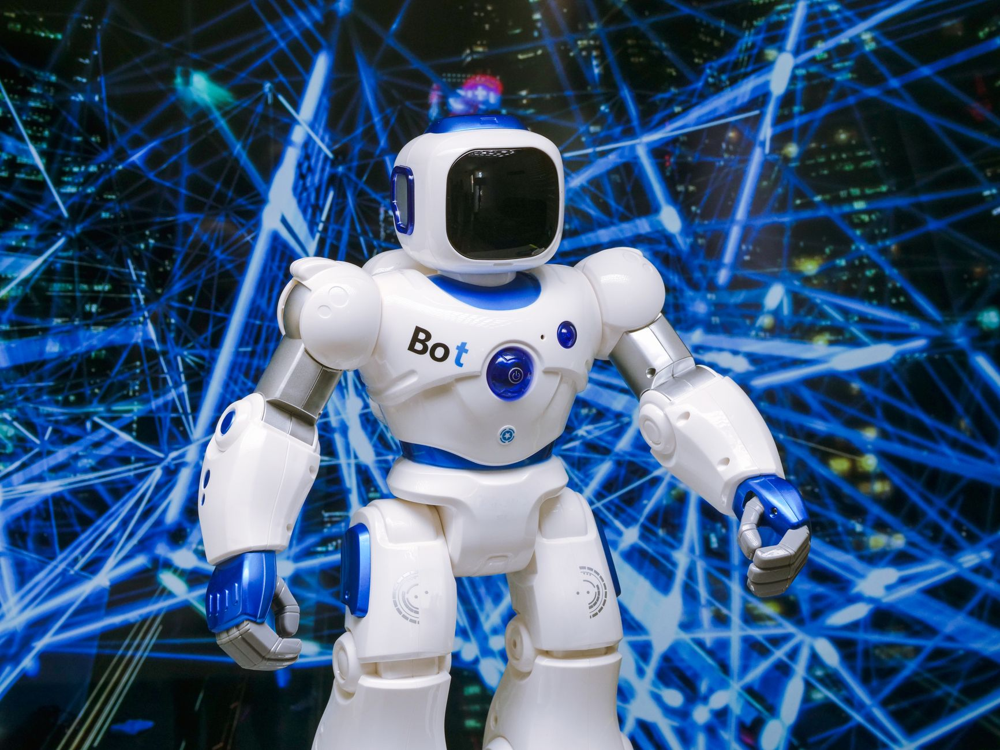
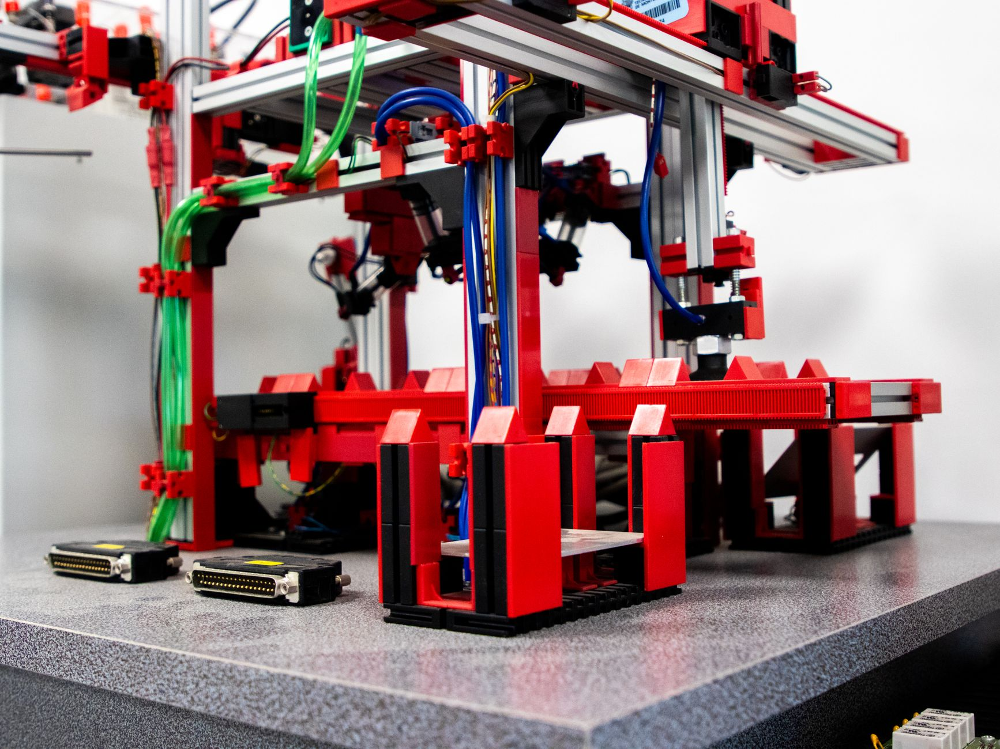
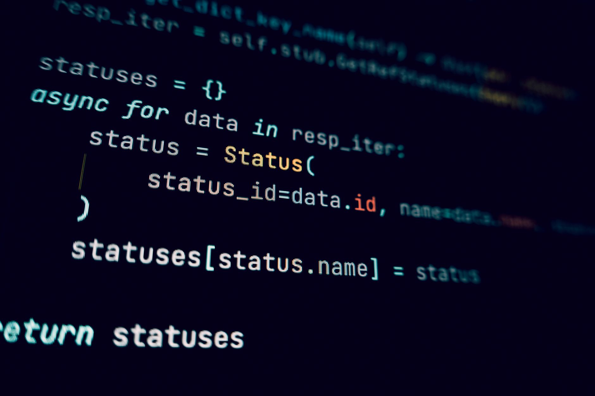

認識 AI Agent
什麼是 AI Agent？它跟我們平常使用的 ChatGPT 有什麼不同？這一章帶你建立最核心的概念。

什麼是 AI？
AI（人工智慧）簡單來說，就是讓電腦像人一樣「思考」和「學習」的技術。你一定已經在用 AI 了——手機的語音助手、Google 翻譯、社群媒體的推薦演算法，這些都是 AI 的應用。
近年最火紅的 AI 技術就是大型語言模型（LLM），像是 ChatGPT、Claude、Gemini 等。它們能理解自然語言，回答問題、寫文章、翻譯、甚至寫程式。
那 AI Agent 又是什麼？
如果說 ChatGPT 是一個「你問它答」的聰明圖書館員，那 AI Agent 就是一個能幫你跑腿辦事的私人助理。
一般的 AI（如 ChatGPT）只能對話——你給它一句話，它回你一段文字。但 AI Agent 能主動「做事」：
- 📧 自動讀取你的 Email，幫你分類和回覆
- 📊 定時抓取網站數據，產生報表
- 💬 監控社群留言，自動回覆常見問題
- 🛒 追蹤商品價格，降價時通知你
ChatGPT = 你問它答（被動回應）
AI Agent = 你設好條件，它自動去執行（主動行動）
AI Agent 的運作原理
AI Agent 的運作可以簡單分成三個步驟，就像人類做事一樣：
感知（Perceive）— 發生了什麼事？
Agent 從外部環境接收資訊。例如：收到一封新 Email、偵測到社群有新留言、到了排定的時間點。這就是「觸發」。
思考（Think）— 該怎麼處理？
Agent 用 AI 大腦分析狀況，做出判斷。例如：這封 Email 是垃圾郵件還是重要信件？這則留言需要回覆嗎？回覆什麼內容？
行動（Act）— 去執行！
Agent 根據判斷結果採取行動。例如：將 Email 標記為重要、自動回覆社群留言、把資料寫入 Google Sheets。
AI Agent 跟自動化腳本有什麼不同？
你可能會想：「寫個程式腳本也能自動化啊，為什麼需要 AI Agent？」
關鍵差異在於處理「不確定性」的能力：
| 比較項目 | 傳統自動化腳本 | AI Agent |
|---|---|---|
| 處理方式 | 固定的 if-else 規則 | 用 AI 理解語意，靈活判斷 |
| 面對新狀況 | 超出規則就當機或忽略 | 能理解並做出合理回應 |
| 舉例 | 收到含「urgent」的信就標記重要 | 讀懂信件內容，判斷是否真的緊急 |
| 適合場景 | 流程固定、規則明確 | 需要理解文字、做出判斷的任務 |
生活中的 AI Agent 應用場景
AI Agent 不是遙不可及的未來科技，它已經在各行各業發揮作用：
- 🏪 電商賣家：自動回覆買家詢問、追蹤訂單狀態、庫存不足時自動通知
- 📱 社群小編：排程發文、監控留言、自動回覆常見問題
- 📊 一人公司老闆：自動整理 Email、產生週報、追蹤專案進度
- 🎓 老師 / 講師：自動批改選擇題、回答學生常見問題、整理學習數據
- 🏠 個人用戶：追蹤包裹、整理收據、提醒重要事項
2024-2026 年，AI 模型的能力大幅提升、成本急速下降。過去需要一整個工程團隊才能做到的自動化，現在一個人、一台電腦就能搞定。這就是「一人公司」的超能力。
什麼是自動化工作流？
了解什麼是工作流、為什麼需要自動化，以及如何用最簡單的方式開始你的第一個自動化任務。

什麼是「工作流」？
工作流（Workflow）就是一連串有順序的步驟，完成某個任務。舉個生活中的例子：
每天早上你可能做這些事：
- 起床 → 2. 刷牙洗臉 → 3. 吃早餐 → 4. 出門上班
這就是一個「日常起居工作流」。在商業場景中也一樣：
- 客戶下單 → 2. 確認庫存 → 3. 發送出貨通知 → 4. 更新帳務報表
這些步驟如果每次都靠人工處理，既費時又容易出錯。自動化工作流就是把這些步驟交給電腦自動執行。
為什麼一人公司更需要自動化？
大公司有團隊分工，一個人只需要負責一個環節。但一人公司呢？一個人就是全部的部門——你是老闆、客服、小編、會計、倉管⋯⋯
自動化能幫你：
- ⏰ 省時間：把每天重複做的事交給 AI，一週省下 10-20 小時
- 🎯 降低錯誤：電腦不會打錯字、不會忘記回覆、不會漏掉訂單
- 🌙 24 小時運作：AI 不用睡覺，凌晨三點也能幫你回客戶訊息
- 💰 降低成本：不用請助理，一套工作流就能頂一個人力
JSON 工作流：下載即用的自動化套件
在本站，我們提供的是 JSON 格式的工作流檔案。你可以把 JSON 工作流想像成一個「自動化食譜」：
- 📖 食譜上寫好了所有步驟（節點）和順序（連線）
- 🍳 你只需要照著做（匯入並執行），不用自己從頭設計菜色
- ✏️ 你還可以根據自己的口味微調（修改參數）
最棒的是，你不需要安裝任何開發環境。只要把 JSON 檔匯入到支援的工作流平台，填入你的 API 金鑰，就能立刻執行。
我們從全球開源社群精選 1,068+ 個高品質工作流，翻譯成中文、附上精準提示詞，讓你下載 JSON 就能直接使用，不需要從零開始學習如何搭建工作流。
工作流的三個核心要素
不管多複雜的工作流，都由三個要素組成：
觸發器（Trigger）— 什麼時候啟動？
工作流的起點。可以是「收到新 Email 時」、「每天早上 9 點」、「有人在網站下單時」，或是「手動按下執行按鈕」。
節點（Node）— 做什麼事？
每個節點負責一個動作，例如「讀取 Email 內容」、「呼叫 AI 分類」、「傳送 LINE 通知」。一個工作流可能有 5 個、10 個、甚至 50 個節點。
連線（Connection）— 順序是什麼？
節點之間的箭頭，決定資料如何流動。A 節點做完 → 傳給 B 節點處理 → 再傳給 C 節點執行。
串接 AI 模型
學會如何申請 AI 模型的 API 金鑰，以及如何用精準的提示詞讓 AI 更準確地完成任務。

什麼是 AI 模型？
AI 模型就是 AI 的「大腦」。不同廠商推出了不同的大腦，各有擅長：
| 模型 | 廠商 | 特色 | 適合場景 |
|---|---|---|---|
| GPT-4o | OpenAI | 綜合能力最強，支援圖片理解 | 通用任務、創意寫作 |
| Claude | Anthropic | 長文本處理能力佳，安全性高 | 文件分析、客服回覆 |
| Gemini | 多模態，與 Google 服務整合好 | 搜尋、文件處理 | |
| DeepSeek | DeepSeek | 開源、價格便宜、中文能力強 | 中文任務、預算有限 |
| Llama | Meta | 開源，可本地部署 | 隱私需求、自架環境 |
什麼是 API 金鑰？
API 金鑰（API Key）就像是 AI 模型的「通行證」。當你的工作流需要呼叫 AI 來做事時，必須出示這張通行證，AI 才知道「喔，是授權用戶來了」。
你可以把它想像成超商的會員卡——刷了卡才能累積點數、使用優惠。沒有卡就進不了門。
申請 OpenAI API 金鑰（最常用）
前往 platform.openai.com → 註冊帳號 → 點選「API Keys」→ 建立新的金鑰。複製並妥善保存，這串金鑰只會顯示一次。
申請 Google Gemini API 金鑰（免費額度）
前往 aistudio.google.com → 用 Google 帳號登入 → 點選「Get API Key」→ 建立金鑰。Google 提供免費使用額度，非常適合新手練習。
在工作流中填入金鑰
匯入 JSON 工作流後，找到需要 AI 的節點，將你的 API 金鑰貼到對應欄位即可。每個工作流的說明中都會標註「請在此填入你的 API Key」。
API 金鑰就像密碼一樣重要！絕對不要分享給別人，也不要張貼在社群媒體上。如果金鑰外洩，別人可能會用你的額度呼叫 AI，產生費用。
提示詞工程：讓 AI 聽懂你在說什麼
提示詞（Prompt）就是你給 AI 的指令。提示詞寫得好，AI 就能精準完成任務；寫得差，AI 就會給你模糊、不相關的回覆。
這就像跟外國人溝通——你說得越清楚、越具體，對方就越能理解你要什麼。
好的提示詞 vs 壞的提示詞
❌ 壞的提示詞（太模糊）
AI 不知道客戶是誰、Email 說了什麼、要用什麼語氣回覆⋯⋯結果當然是亂回一通。
✅ 好的提示詞（明確具體）
這樣的提示詞給了 AI 清楚的角色、任務、格式和語氣要求，回覆品質天差地遠。
每個工作流都附帶精心設計的中文提示詞，你不需要自己想。直接複製貼上就能大幅減少 AI 的試錯次數，省下 50%-80% 的 Token 費用。
Token 是什麼？為什麼要省？
Token 是 AI 模型計算費用的單位。大約 1 個中文字 ≈ 1.5 個 Token，1 個英文字 ≈ 1 個 Token。AI 廠商按照你使用了多少 Token 來收費。
省 Token 的秘訣：
- 🎯 提示詞要精準：越明確，AI 越不用來回確認
- ✂️ 只傳必要的資料：不要把整篇文章都丟給 AI，節選重點就好
- 📋 善用本站的提示詞：我們已經幫你優化過了
用 WhatsApp / Telegram 遙控 AI Agent
學會從手機發訊息就能遠端操控電腦上的 AI Agent，讓自動化工作流隨身帶著走。
為什麼要從手機遙控？
想像這個場景：你在外面跑客戶，突然想到「幫我查一下今天的銷售數據」或「幫我回覆那個客戶的訊息」。以前你得回到電腦前才能處理，但現在只要從手機傳一則訊息給你的 AI Agent，它就自動幫你搞定。
這就是「手機遙控 AI Agent」的威力——你的 AI 助理 24 小時待命，隨時等你下令。
選擇你的遙控工具
最常拿來當「遙控器」的兩個 App：
| 比較項目 | Telegram | |
|---|---|---|
| 建立 Bot | ✅ 非常簡單，5 分鐘搞定 | ⚠️ 需要 WhatsApp Business API |
| 費用 | 完全免費 | 免費（但 Business API 有額度限制） |
| 台灣使用率 | 中等，科技圈較多 | 非常高，幾乎人人都有 |
| 推薦程度 | ⭐⭐⭐⭐⭐ 新手首選 | ⭐⭐⭐⭐ 已有 WhatsApp 者適用 |
方法一：用 Telegram 遙控（推薦新手）
Telegram 是最簡單的遙控方案，因為它內建了 Bot 機制，不需要任何額外設定。
建立你的 Telegram Bot
在 Telegram 搜尋 @BotFather（這是 Telegram 官方的 Bot 管理員），發送 /newbot 指令，依照指示取名。完成後你會拿到一組 Bot Token（格式像 123456:ABC-DEF...），這就是你的 Bot 身份證。
建立工作流並加入 Telegram 節點
在工作流中加入一個 Telegram Trigger 節點，填入你的 Bot Token。這個節點會「監聽」你傳給 Bot 的每一則訊息。
設計你的指令系統
設定好指令格式，例如：
• 傳「報表」→ AI 自動產生今日銷售報表
• 傳「回覆 [客戶名稱]」→ AI 幫你草擬回覆訊息
• 傳「查 [商品名稱]」→ AI 幫你查詢庫存和價格
用手機測試
在 Telegram 找到你剛建立的 Bot，發送一則測試訊息。如果工作流正確運作，你會收到 AI 的回覆！
方法二：用 WhatsApp 遙控
WhatsApp 的設定稍微複雜一些，但如果你的客戶都在 WhatsApp 上，這會是更好的選擇：
- 前往 developers.facebook.com 註冊 Meta 開發者帳號
- 申請 WhatsApp Business API 存取權限
- 在工作流中設定 WhatsApp 節點，填入你的 API 憑證
- 設定 webhook 接收訊息，設計自動回覆邏輯
假設你是一個蝦皮賣家，每天收到很多買家詢問「有沒有現貨？」「什麼時候出貨？」。你可以建立一個工作流：
1. 買家傳訊息到你的 Telegram Bot
2. AI 讀取訊息，判斷問題類型
3. AI 從你的商品資料庫查詢答案
4. 自動回覆買家
全程你不需要動一根手指！
進階玩法：群組遙控
你不只能一對一遙控，還可以把 Bot 加入 Telegram 群組，讓團隊成員都能使用同一個 AI Agent：
- 👨💼 老闆傳「@bot 週報」→ 自動彙整本週數據
- 👩💻 行銷傳「@bot 帮我想 5 個貼文標題」→ AI 給出建議
- 📦 倉管傳「@bot 庫存查詢 iPhone 16」→ 即時庫存數量
一個 Bot 就是一個全能助理，服務整個團隊！
你的第一個工作流
從本站下載一個 JSON 工作流，匯入執行，親眼見證 AI 自動化的力量。
挑選你的第一個工作流
回到 AI 工作流市集首頁，你可以用以下方式找到適合的工作流：
- 🔍 搜尋關鍵字：例如「LINE」、「Email」、「社群」
- 📂 瀏覽分類：15 個行業分類，找到你最需要的
- ⭐ 看台灣精選：針對台灣常用平台（蝦皮、LINE、Facebook）量身打造
- 🆕 看最新消息：每週更新的工作流推薦
新手建議先挑一個節點數少（5-10 個）、複雜度標示為「簡單」的工作流來練習。
下載 JSON 檔案
在工作流卡片上點擊「下載 JSON」按鈕，你的瀏覽器會下載一個 .json 檔案。這就是工作流的全部資料，通常只有幾 KB 大小。
匯入到工作流平台
登入你的工作流平台（如 N8N），找到「Import from File」或「匯入」功能，選擇剛才下載的 JSON 檔案。匯入後你會看到一個視覺化的工作流圖——每個方塊就是一個節點，箭頭就是連線。
填入你的 API 金鑰
找到需要連接外部服務的節點（通常是 AI 模型、LINE、Email 等），點擊節點後填入你自己的 API 金鑰。沒有金鑰，節點就無法正常運作。
測試執行
點擊工作流的「Execute」或「測試執行」按鈕。你會看到資料像水流一樣，從觸發器開始，依序通過每個節點。如果一切順利，最後一個節點會顯示綠色的 ✅ 成功圖示！
每個工作流除了 JSON 檔，還附帶一組中文提示詞。匯入工作流後，把提示詞貼到 AI 節點的 System Prompt 欄位，能大幅提升 AI 的回覆品質，同時省下 50% 以上的 Token 費用。
常見問題排除
- 🔴 節點出現紅色錯誤：通常是 API 金鑰沒有填、或填錯了。重新檢查一遍。
- ⚠️ 回傳資料是空的：可能是觸發條件沒有滿足。例如 Webhook 觸發器需要有人真的呼叫它才會啟動。
- 🐌 執行很慢：AI 模型的回應時間取決於模型和提示詞長度，通常需要 5-30 秒，這是正常的。
理解節點與觸發器
深入了解工作流的內部結構——每個節點在做什麼、資料如何流動。
觸發器：工作流的起點
每個工作流都有一個觸發器（Trigger），它決定了「什麼時候開始執行」。常見的觸發器有：
| 觸發器類型 | 說明 | 使用場景 |
|---|---|---|
| 手動觸發 | 你按下「執行」按鈕才會啟動 | 測試、不定期執行的任務 |
| 排程觸發 | 設定時間自動執行（每小時、每天 9 點⋯） | 定時報表、定期備份 |
| Webhook | 外部系統發送 HTTP 請求時啟動 | 網站表單送出、電商訂單成立 |
| Email 觸發 | 收到新 Email 時啟動 | 自動分類信件、自動回覆 |
| Telegram 觸發 | 收到 Telegram 訊息時啟動 | 手機遙控 AI Agent |
常用節點類型
觸發器之後，就是一連串的節點（Node）。每個節點做一件事，以下是工作流中最常出現的節點：
- 🌐 HTTP Request：向任何網站或 API 發送請求。這是萬用節點，幾乎什麼都能串。
- 🤖 AI / LLM 節點：呼叫 ChatGPT、Claude 等 AI 模型來分析文字、產生回覆。
- 🔀 IF（條件判斷）：根據條件走不同路線。例如「如果訊息包含投訴 → 轉給人工客服」。
- 📝 Set（設定資料）：整理、轉換資料格式。像是把 AI 回覆整理成 Email 格式。
- 💻 Code（程式碼）：執行 JavaScript 或 Python 程式碼，處理複雜邏輯。
- 📧 Email / LINE / Telegram：發送訊息到各種平台。
- 📊 Google Sheets：讀寫 Google 試算表，做資料紀錄和報表。
資料如何在節點之間流動？
想像一條工廠的輸送帶：
- 觸發器產生一個「包裹」（資料）放上輸送帶
- 每個節點從輸送帶上拿到包裹，做自己的事（加工），再放回輸送帶
- 最後一個節點把成品送出（例如：發一則 LINE 訊息）
每個節點都能看到前面所有節點的輸出結果。例如第一個節點抓到了客戶 Email 內容，第二個節點就能拿到這份內容送給 AI 分析，第三個節點就能拿到 AI 的分析結果來決定怎麼回覆。
JSON 工作流的結構其實很直覺："nodes" 陣列裡放的就是所有節點，"connections" 裡放的就是節點之間的連線。下次匯入工作流時，不妨試著閱讀 JSON 內容，你會發現它比你想像的簡單！
實戰：建立你的專屬工作流
從需求分析到完成部署，一步步帶你打造屬於自己的自動化工作流。
第一步：需求分析 — 你想自動化什麼？
在動手之前，先問自己這幾個問題：
- 🤔 我每天花最多時間在什麼重複性的事情上？
- 😤 哪些事情讓我覺得煩躁、但又不得不做？
- 💡 如果有個助理，我最想交代他做什麼？
把答案寫下來，這就是你的自動化需求。
常見的自動化場景
| 場景 | 觸發條件 | 自動執行 |
|---|---|---|
| 客戶 Email 回覆 | 收到新 Email | AI 讀取 → 判斷類型 → 草擬回覆 |
| 社群排程發文 | 每天早上 9 點 | AI 產生文案 → 發到 FB/IG |
| 訂單通知 | 蝦皮有新訂單 | 抓取訂單資料 → 傳 LINE 通知 |
| 數據報表 | 每週一早上 | 彙整 Google Sheets → 產生週報 |
| 留言監控 | 粉專有新留言 | AI 分析情緒 → 自動或人工回覆 |
第二步：畫出工作流架構
拿起紙筆（或用任何畫圖工具），把你的工作流畫出來：
- 先畫觸發器：什麼時候啟動？
- 再畫主要動作：需要做哪些事？
- 最後畫分支邏輯：不同情況要怎麼處理？
例如，一個「AI 自動回覆 Email」的架構圖：
第三步：在平台上搭建
有了架構圖，就可以開始在工作流平台上搭建了：
新增觸發器節點
根據你的需求選擇觸發器。如果是要監聽 Email，就選 Email Trigger；如果是定時執行，就選 Schedule Trigger。
依序加入功能節點
按照架構圖，一個一個拉入節點。每個節點之間用箭頭（連線）串起來。不用急，慢慢來。
設定每個節點的參數
點擊每個節點，填入需要的設定——API 金鑰、收件人、提示詞內容等。這是最花時間的部分。
加入條件判斷
用 IF 節點處理不同情況。例如「如果 AI 判斷是投訴 → 走 A 路線；是詢價 → 走 B 路線」。
第四步：測試、除錯、優化
搭建完成後，一定要反覆測試：
- ✅ 正常路線測試：給一個標準的輸入，確認輸出正確
- ❌ 異常路線測試：給一個異常的輸入（空白 Email、超長文字），看工作流是否會當掉
- ⚡ 效能優化：如果執行太慢，檢查是不是某個節點呼叫 API 的次數太多
- 💰 成本優化：AI 節點的提示詞是否夠精準？能否減少不必要的 AI 呼叫？
與其從零開始，不如找一個接近你需求的工作流，下載 JSON，然後修改。例如找到一個「Email 自動分類」的工作流，你可以再加上「自動回覆」的節點。站在巨人的肩膀上，事半功倍！
進階資源與社群
恭喜你完成了課程！接下來這些資源能幫助你持續成長。
🎓 課程總結
恭喜你走到了這裡！讓我們回顧一下你學到了什麼：
- ✅ Ch.1 — 了解了 AI Agent 的概念和運作原理
- ✅ Ch.2 — 理解了自動化工作流和 JSON 格式
- ✅ Ch.3 — 學會了如何申請 API 金鑰和撰寫提示詞
- ✅ Ch.4 — 掌握了用手機遙控 AI Agent 的方法
- ✅ Ch.5 — 成功下載並執行了你的第一個工作流
- ✅ Ch.6 — 深入了解了節點、觸發器和資料流
- ✅ Ch.7 — 學會了如何從零打造專屬工作流
你已經具備了 AI 自動化的基本功。接下來，就是持續練習、持續探索！
🔍 本站工作流搜尋技巧
回到 AI 工作流市集，善用以下功能找到你需要的工作流：
- 關鍵字搜尋：用中文或英文搜尋功能、平台名稱（如「LINE」、「蝦皮」、「Email」）
- 分類篩選：15 個行業分類快速篩選
- 複雜度篩選：新手選「簡單」，熟練後挑戰「中等」和「複雜」
- Token 計算器：在首頁底部，評估使用特定 AI 模型的成本
📚 推薦學習資源
| 資源 | 說明 | 適合誰 |
|---|---|---|
| N8N 官方文件 | docs.n8n.io — 最完整的節點說明 | 想深入了解特定節點的人 |
| N8N 社群 | community.n8n.io — 問答和工作流分享 | 遇到問題想找答案的人 |
| OpenAI 文件 | platform.openai.com/docs — API 說明 | 想更了解 AI 模型的人 |
| YouTube 搜尋 | 搜尋「N8N 教學」、「AI Agent 教學」 | 喜歡看影片學習的人 |
👥 加入「一人公司研究所」社群
學習的路上不需要孤軍奮鬥！加入我們的社群：
- 📘 Facebook 粉絲專頁：一人公司研究所 — 每週分享 AI 實戰案例和新工作流
- 💬 留言互動：在粉專貼文下方提問，我們會盡量回答
- 📢 最新消息：追蹤粉專，第一時間收到新工作流和教學更新
1. 回到 工作流市集，下載 3 個你感興趣的工作流
2. 每天花 15 分鐘研究一個工作流的結構
3. 嘗試修改一個工作流，加入自己的客製化邏輯
4. 在粉專分享你的成果，幫助更多人學習！
🦐 小龍蝦三代隨身碟
如果你想要一個開箱即用的 AI 自動化解決方案，我們推出了小龍蝦三代 USB AI Agent 隨身碟——內建完整的 AI 運行環境，插上電腦就能用，不需要任何安裝設定。
詳情請見 首頁產品介紹。